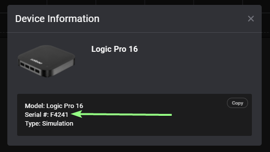

Getting Started
Installing the Python Automation API package
To get started, you will need the latest build of the Logic 2 Software (2.4.0+), the logic2-automation (1.0.0+) python package, and Python 3.8, 3.9, or 3.10.
First, let’s install the logic2-automation package:
pip install logic2-automation
Launching Logic2
The automation interface can be enabled in the software UI. Open the preferences dialog from the main menu, and scroll to the bottom.

When the checkbox is checked, the automation server will start running in the Logic 2 software on the default port, 10430.
Using the Python Automation API
Next, let’s run a simple example. You don’t need to have a device connected for this. This example uses a demo device, if you would like to use a connected device follow the steps here to find your device’s serial number and replace the demo value in the example.
Create a new python file called saleae_example.py, and paste in these contents:
from saleae import automation
import os
import os.path
from datetime import datetime
# Connect to the running Logic 2 Application on port `10430`.
# Alternatively you can use automation.Manager.launch() to launch a new Logic 2 process - see
# the API documentation for more details.
# Using the `with` statement will automatically call manager.close() when exiting the scope. If you
# want to use `automation.Manager` outside of a `with` block, you will need to call `manager.close()` manually.
with automation.Manager.connect(port=10430) as manager:
# Configure the capturing device to record on digital channels 0, 1, 2, and 3,
# with a sampling rate of 10 MSa/s, and a logic level of 3.3V.
# The settings chosen here will depend on your device's capabilities and what
# you can configure in the Logic 2 UI.
device_configuration = automation.LogicDeviceConfiguration(
enabled_digital_channels=[0, 1, 2, 3],
digital_sample_rate=10_000_000,
digital_threshold_volts=3.3,
)
# Record 5 seconds of data before stopping the capture
capture_configuration = automation.CaptureConfiguration(
capture_mode=automation.TimedCaptureMode(duration_seconds=5.0)
)
# Start a capture - the capture will be automatically closed when leaving the `with` block
# Note: The serial number 'F4241' is for the Logic Pro 16 demo device.
# To use a real device, you can:
# 1. Omit the `device_id` argument. Logic 2 will choose the first real (non-simulated) device.
# 2. Use the serial number for your device. See the "Finding the Serial Number
# of a Device" section for information on finding your device's serial number.
with manager.start_capture(
device_id='F4241',
device_configuration=device_configuration,
capture_configuration=capture_configuration) as capture:
# Wait until the capture has finished
# This will take about 5 seconds because we are using a timed capture mode
capture.wait()
# Add an analyzer to the capture
# Note: The simulator output is not actual SPI data
spi_analyzer = capture.add_analyzer('SPI', label=f'Test Analyzer', settings={
'MISO': 0,
'Clock': 1,
'Enable': 2,
'Bits per Transfer': '8 Bits per Transfer (Standard)'
})
# Store output in a timestamped directory
output_dir = os.path.join(os.getcwd(), f'output-{datetime.now().strftime("%Y-%m-%d_%H-%M-%S")}')
os.makedirs(output_dir)
# Export analyzer data to a CSV file
analyzer_export_filepath = os.path.join(output_dir, 'spi_export.csv')
capture.export_data_table(
filepath=analyzer_export_filepath,
analyzers=[spi_analyzer]
)
# Export raw digital data to a CSV file
capture.export_raw_data_csv(directory=output_dir, digital_channels=[0, 1, 2, 3])
# Finally, save the capture to a file
capture_filepath = os.path.join(output_dir, 'example_capture.sal')
capture.save_capture(filepath=capture_filepath)
With the software is running, and the automation interface enabled (as shown above), run the script:
python saleae_example.py
There you have it! Take a look at the documentation for Manager and Capture to see how the functionality all works!
Also, for most automated applications, you won’t want to start the software manually. See this section for more information about different ways to launch the Logic software.
Finding the Serial Number (Device Id) of a Device
To find the serial number of a connected device, open capture info sidebar and click the device dropdown in the top right:

If the device you want the serial number for is not selected, select it. Then click “Device Info” - this will open a popup with information about your device, including its serial number.
You can copy the serial number from here and use it in your Python script where a “device_id” is required.
Versioning
The saleae.proto file contains a version (major.minor.patch). It can be found in the file header, and also in the ThisApiVersion enum.
When generating language bindings, you can get the version of the .proto that was used through the protobuf ThisApiVersion enum - THIS_API_VERSION_MAJOR, THIS_API_VERSION_MINOR, and THIS_API_VERSION_PATCH.
The version of the .proto file that the server is using can be retrieved using the GetAppInfo gRPC method, or the Manager.get_app_info() call in the Python API.
For a given major version, the API strives to be forward and backwards compatible.
The major version will change when:
There are any breaking changes
The minor version will change when:
New features are added
Additions are made to the existing API
The patch version will change when:
There are fixes to the API
When implementing a client that uses the gRPC API directly, it is recommended to always retrieve the api version via GetAppInfo to validate that the major version is the same, and that the minor version is not older than the client. The Python API does this automatically on creation of the Manager object.
Headless on Linux
We do not currently support running Logic 2 in a headless mode, but it is possible to run Logic 2 in headless Linux environments using XVFB.
The specifics for your environment may differ, but on Ubuntu 20.04 we have had success with the following setup.
Install xvfb and other depdendencies:
sudo apt install xvfb libatk1.0-0 libatk-bridge2.0-0 libgtk-3-0 libgbm1
Run Logic 2:
xvfb-run path/to/Logic-2.4.0.AppImage
Troubleshooting
Failure during install due to ModuleNotFoundError: No module named 'hatchling'
logic2-automation is packaged as a source distribution and built locally on install using hatchling. If you are building without isolation (for example, pip install --no-build-isolation logic2-automation) and you don’t have hatchling installed, you will see this error. If you can’t install with isolation, you can install hatchling (example: pip install hatchling) in your local environment to resolve the issue.
Failure when importing saleae.automation / saleae.grpc
If you see an error like this when you import from saleae.automation, it may be a protobuf/grpc version incompatibility. This can happen when you upgrade protobuf and/or grpc after installing logic2-automation.
TypeError: Descriptors cannot not be created directly.
If this call came from a _pb2.py file, your generated code is out of date and must be regenerated with protoc >= 3.19.0.
If you cannot immediately regenerate your protos, some other possible workarounds are:
1. Downgrade the protobuf package to 3.20.x or lower.
2. Set PROTOCOL_BUFFERS_PYTHON_IMPLEMENTATION=python (but this will use pure-Python parsing and will be much slower).
You can regenerate the protobuf/grpc files by reinstalling logic2-automation:
pip install --force-reinstall logic2-automation
Can’t find a solution?
Contact us at https://contact.saleae.com/hc/en-us/requests/new